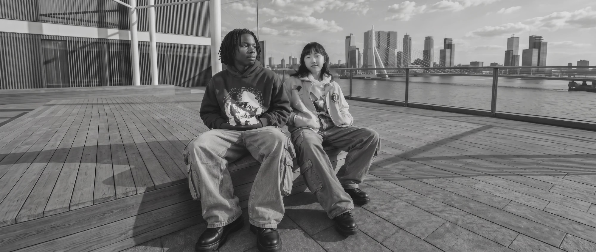

Als je kiest voor het Stedelijk Lyceum Rotterdam, krijg je les in het nieuwste schoolgebouw van heel Rotterdam. Echt vet.
Alles is super nieuw en modern: de nieuwste lokalen, apparatuur, moderne collegezalen en de vetste gymzaal van heel de stad. Kortom, alles wat jij je als leerling kunt wensen. Check snel waarom ons schoolgebouw zo vet is!
Wat je bij ons hebt, vind je normaal bijna nooit op een middelbare school.
Van de daktuin met uitzicht over de Rijnhaven tot het stadslab vol technologie: ons gebouw is ontworpen om te leren, te maken en te ontdekken. En ontdekken ga jij vooral in de omgeving rondom onze school, op de Kop van Zuid.
